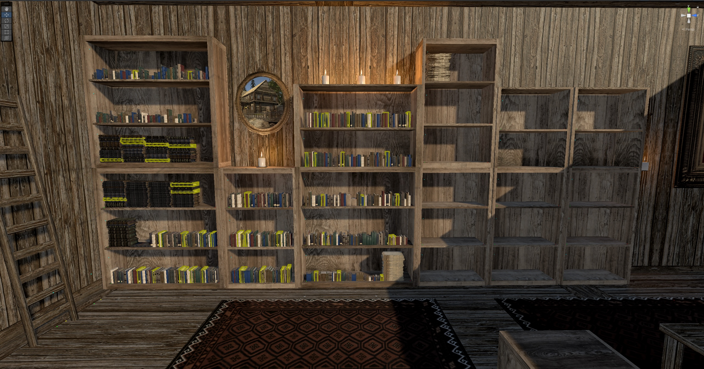

Education
Cornell Tech
Master of Engineering in Computer Science
Expected Graduation May 2024

At Cornell I am enhancing my expertise in Virtual and Augmented Reality, while also broadening my computer science skills across topics and cultivating a particular interest in Machine Learning. I am also increasing my business acumen and working in the Spring of 2024 to create a startup for a new VR & AR platform focused on enhancing education.
Distinctions: Merit Scholarship Recipient
Bowdoin College
Bachelor of Arts in Neuroscience.
Minor in Computer Science.
Graduated May 2022

At Bowdoin I investigated a love for the natural scienes in my Neuroscience degree while fueling a growing passion for computer science, particularly the field of Virtual and Augmented Reality, which I found to be a supremely creative outlet for my interest in programming. Outside of the classroom I created and launched Bowdoin College's first-ever VR research lab, through which I enabled diverse novel research across disciplines. I led the lab for most of my time at Bowdoin while competing at the Varsity level for the College's rowing team.
Distinctions: Phi Beta Kappa. Freedman Fellowship. Gibbons Fellowship. 4x Sarah & James Bowdoin Scholar. 2x Book Award. GPA: 3.94.
Activities: Varsity Rowing First Team Academic All-American. Student Government.
Delbarton School
Graduated May 2018
Honors: Valedictorian. Bryan Bennet "Quiet Hero" Award.
Skills
Coding Languages
C#, Python, Java
Virtual & Augmented Reality Tools
Unity, Blender, Modeling, Sculpting, Texturing, Scripting
Tool & Package Proficiencies
PyTorch, Git, Agisoft Metashape, LASTools
Soft Skills
Excellent written and verbal communication, teamwork, and leadership
Language Proficiencies
Spanish
Certifications
American Board of Artificial Intelligence in Medicine (ABAIM) - December 2023
MIT xPRO Virtual Reality and Augmented Reality - January 2023
Certificate of Business Formation, Rising Tide Virtual Reality Solutions LLC - June 2022
Work Experience
Rising Tide Virtual Reality Solutions LLC, Founder
Founded and led a company specializing in the development of VR experiences to enhance interdisciplinary research. Spearheaded the creation of a Digital Twin for Colby College, translating LiDAR data into a vivid 3D landscape that replicates the topography of Allen Island. Crafted interactive environments for Bowdoin College, transforming static data into dynamic VR experiences that engage and educate.
Emerging Technologies Lab, Director
Directed the VR research lab at Bowdoin College, fostering interdisciplinary projects to empower faculty research. Developed an interactive VR model that simulates the geoscience field lab experience, incorporating educational goals and interactive learning. This model was central to a human subject research study assessing the system's efficacy.
Neuroscience Department, Bowdoin College
As a Teaching Assistant, I guided undergraduates through complex molecular pathways of the central and peripheral nervous systems, enhancing their grasp of key concepts and applications. I facilitated the critical analysis of research articles, mentoring students in synthesizing and authoring scientific reviews.
Computer Science Department, Bowdoin College
During my tenure as a Freedman Summer Research Fellow, I implemented a VR research framework leveraging Unity Engine. This system connected to an online database to capture and analyze participant data, streamlining the collection and study of performance metrics in VR research settings.
Celularity Inc., Medical Affairs Intern
My role involved conducting a thorough literature review on the pioneering use of stem cell therapy in treating Parkinson’s Disease. I developed a protocol for the production of stem cell-derived neurons, presenting a viable treatment protocol to the executive team that has the potential to propel the project into a significant phase of development.
Bowdoin College & University of Maine VEMI Lab
As a Gibbons Summer Research Fellow, I established Bowdoin College's inaugural VR research lab, aimed at bolstering faculty research through virtual reality technologies. Collaborating with the VEMI Lab at the University of Maine, we worked to create immersive VR environments for educational and research purposes.
Projects
Allen Island Digital Twin
Video Walkthrough
The Allen Island Digital Twin project transformed LiDAR data into a detailed 3D model. GIS software was used to process the data into a 3D mesh, followed by sculpting and texturing in Blender. The Unity engine was employed to develop a dynamic environment with real-time data integration and particle systems for forest simulation. This tool offers comprehensive environmental exploration and study.
Skills and Technologies Used: GIS Data Processing, 3D Mesh Sculpting, Blender Texturing, Unity Environment Simulation, Particle System Design, Real-time Data Integration.
Galileo’s Library

Video Walkthrough
Galileo’s Library project involved creating an immersive 3D VR library in Unity. Users interact with historical texts in a virtual space, sorting and engaging with the collection. The project blends historical research with modern VR technology for educational purposes.
Skills and Technologies Used: Unity Development for VR, 3D Book Modeling, Interactive VR Design, Custom Sorting Algorithms, Historical Data Implementation.
Giant’s Stairs Virtual Field Trip
Video Walkthrough
This educational tool replicates a geological field trip in VR, developed in Unity. It featured two versions: one for VR headsets and one for desktop. The interactive environment helped develop spatial reasoning skills, making it an accessible learning tool.
Skills and Technologies Used: Unity Development, 3D Geological Modeling, VR and Desktop Application Design, Interactive Educational Content, Spatial Reasoning Enhancement.
Bowdoin Gallery Recreation
Video Walkthrough
The recreation of Bowdoin Gallery involved creating a to-scale 3D model in Blender and implementing it in Unity for VR interaction. The project focused on spatial accuracy, offering a realistic and navigable virtual space for gallery management and accessibility.
Skills and Technologies Used: Blender for Precise 3D Modeling, Unity Integration, VR Navigation and Interaction, Spatial Accuracy, Accessibility Design.
Creation of the Bowdoin College Virtual Reality Lab
Lab Website
Setting up the Bowdoin College VR Lab involved VR hardware setup and programming original VR content. The lab facilitated interdisciplinary research, utilizing Unity and Blender for content creation across various academic fields.
Skills and Technologies Used: VR Hardware Setup and Configuration, Unity Programming, Blender 3D Content Creation, Interdisciplinary VR Project Coordination.
Publications
Work-in-Progress-Virtual Field Trips to Increase Geoscience Accessibility and Student Engagement - IEEE, May 2021
Pilot Desktop and Immersive Virtual Reality Field Trip Study of Coastal Maine Indicates Equivalent Student Learning Outcomes and High Engagement - ESSOAR, 2021
Contact